Chapter 1: Electric Charges and Fields
Class 12 Physics — NCERT Detailed Notes with Diagrams
1 Introduction
Electricity and magnetism together form the subject of electromagnetism. Static electricity, i.e. the study of forces, fields and potentials arising from static charges, is called electrostatics. This chapter builds electrostatics from the concept of electric charge, Coulomb’s law, and the electric field, leading up to Gauss’s law and its applications.
2 Electric Charge
Electric charge is an intrinsic (fundamental) property of certain elementary particles of matter which gives rise to electric force between various objects. It is a scalar quantity and can be positive, negative, or zero.
2.1 Historical background
The word “electricity” is coined from the Greek word elektron, meaning amber. Ancient Greeks observed that amber rubbed with wool or silk attracts light objects like bits of paper. Similarly, a glass rod rubbed with silk, or an ebonite rod rubbed with wool/fur, acquires the property of attracting light objects.
2.2 Two kinds of charge
Experiments show there are exactly two kinds of charges:
- Charge on a glass rod rubbed with silk — called positive charge (by convention, given by Benjamin Franklin).
- Charge on a plastic/ebonite rod rubbed with fur — called negative charge.
Objects that show no electrical effects are said to be electrically neutral — they contain equal amounts of positive and negative charge.
2.3 Origin of charge — the electron
On the microscopic level, charging by friction is really a transfer of electrons from one body to the other. The body that loses electrons becomes positively charged, and the body that gains electrons becomes negatively charged.
- Glass rod rubbed with silk: glass loses electrons to silk ⇒ glass becomes positive, silk becomes negative.
- Ebonite rod rubbed with fur/wool: ebonite gains electrons from fur ⇒ ebonite becomes negative.
2.4 Detecting and measuring charge — the gold-leaf electroscope
A simple gold-leaf electroscope consists of a vertical metal rod housed in a box, with two thin gold leaves attached to its bottom. When a charged object touches the metal knob at the top, charge flows to the leaves, which then diverge because like charges on the two leaves repel each other. The degree of divergence indicates the amount of charge (roughly).
3 Conductors and Insulators
Conductors are substances that allow electricity to pass through them easily; they contain a large number of free (mobile) electrons. Examples: metals, the human body, the earth.
Insulators (dielectrics) offer high resistance to the passage of electricity through them; charge given to them stays at the place it is put. Examples: glass, porcelain, plastic, nylon, wood.
This classification is not absolutely rigid — there also exist semiconductors, which offer resistance intermediate between conductors and insulators (e.g. silicon, germanium), and superconductors, which offer no resistance at all.
When some charge is transferred to a conductor, it readily gets distributed over the entire surface, because the free charges can move. In contrast, if some charge is put on an insulator, it stays at the same place.
3.1 Earthing (grounding)
The earth is such a large conductor that it can be considered to be at zero potential and to have an infinite capacity to give or take up electrons. When a charged conductor is connected to the earth by a conducting wire, all the extra charge on the conductor disperses through this process, called grounding or earthing. Earthing provides a safety measure for electrical circuits and appliances.
4 Methods of Charging a Body
A neutral body can be given a net electric charge mainly in three ways: by friction, by conduction, and by induction.
4.1 Charging by friction
When two different neutral bodies are rubbed against each other (e.g. a glass rod with silk, or an ebonite rod with fur), electrons are transferred from one body to the other due to friction between their surfaces.
- The body that loses electrons is left with a deficiency of electrons and becomes positively charged.
- The body that gains electrons has an excess of electrons and becomes negatively charged.
The two bodies acquire equal and opposite charges (consistent with conservation of charge — the total charge of the isolated (rod + cloth) system remains zero, since it was zero before rubbing). This method works well for insulators, since the charge produced stays localised at the place of rubbing.
4.2 Charging by conduction (contact)
Charging by conduction is the process of charging an uncharged conductor by bringing it into direct physical contact with an already charged conductor.
When a charged conductor A touches an uncharged conductor B, some charge flows from A to B until, ideally, both share the same electrical state; the charge acquired by B is of the same sign as that on A. Because a part of the original charge is now shared between the two bodies, both A and B end up with less charge than A had originally — the total charge before and after contact remains conserved (redistributed, not created).
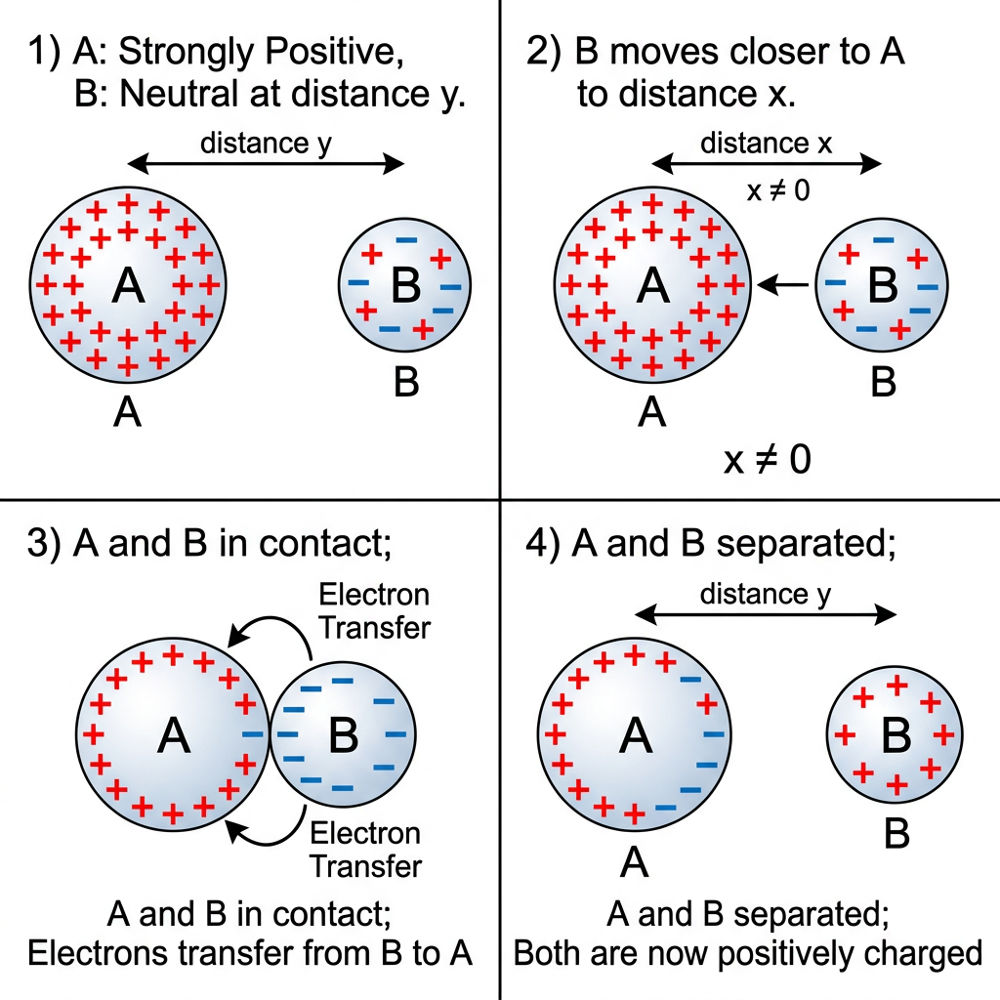
4.3 Charging by induction
Electrostatic induction is the phenomenon of charging a conductor without actual contact with a charged body.
Steps of charging a sphere by induction
- Take two metal spheres, A and B, supported on insulating stands, in contact with each other.
- Bring a positively charged rod near sphere A, without touching it. The free electrons in the spheres move towards the rod; positive charge moves to the far end of sphere B. This redistribution of charge takes place so long as the charged rod is held near sphere A — it is called induction.
- Separate the spheres, using the insulating stands, while the charged rod is still held near A. Sphere A remains negatively charged and sphere B remains positively charged.
- Remove the rod. The charges on the spheres rearrange themselves so that they are uniformly spread over the outer surface.
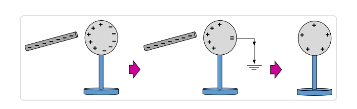
The net or total charge on the conductor remains zero before induction; the process merely separates the positive and negative charges to opposite ends. The negative charge appears near the inducing (positive) rod and positive charge farther away, i.e. charge induced is opposite in sign to the inducing charge.
Key differences: conduction vs induction
- Conduction needs direct contact; induction needs no contact at all.
- Charge gained by conduction has the same sign as the charging body; charge gained (on the near side) by induction is opposite in sign to the inducing charge.
- In conduction, the charging body itself loses some of its charge; in induction, the inducing charge does not change at all — it only causes redistribution of charge in the other body.
5 Basic Properties of Electric Charge
5.1 Additivity of charges
Charges add up like real numbers, i.e. they are scalars, just as the masses of the body added are scalars. If a system contains n point charges q₁, q₂, q₃, …, qₙ, the total charge of the system is
Unlike mass, charge can be of either sign, so in the sum above, individual charges are taken with their appropriate sign. For example, charges +1, +2, −3 units in some system of units, sum to give net charge 0.
5.2 Conservation of charge
The total charge of an isolated system is always conserved, i.e. the total charge of the system does not change with time. Charge can neither be created nor destroyed — it can only be transferred from one body to another.
When bodies are charged by friction, no new charge is created; the total charge remains the same before and after rubbing. Similarly, in radioactive decay and other nuclear/elementary-particle reactions, the algebraic sum of the positive and negative charges before and after the reaction remains unchanged.
5.3 Quantization of charge
All free charges are integral multiples of a basic unit of charge e (the charge on an electron/proton). The charge q on any object is given by
where n is any positive or negative integer, and e is the elementary charge, e = 1.602192 × 10⁻¹⁹ C.
5.3.1 Explanation
The quantization of charge was demonstrated experimentally by Millikan in 1912. All the observable charges — on macroscopic or microscopic bodies — are found to be integral multiples of e. Charge is thus quantized; it cannot take a continuous set of values. On the macroscopic scale, dealing with a charge of a few µC, quantization is of no practical consequence, since the charge involves a very large number of elementary charges, so that discreteness of charge is not visible.
5.4 Invariance of charge
Unlike mass, electric charge is invariant — the charge on a body does not change with its speed. The mass of a body increases with its speed (as per the theory of relativity), but the charge on it remains constant however fast it moves. This is an important distinguishing property of charge as compared to mass.
6 Coulomb’s Law
Coulomb’s law states that the force of attraction or repulsion between two stationary point charges is directly proportional to the product of the magnitudes of the two charges and inversely proportional to the square of the distance between them, and is directed along the line joining the two charges.
6.1 Mathematical form
For two point charges q₁ and q₂ separated by distance r in vacuum,
where ε₀ is the permittivity of free space, and
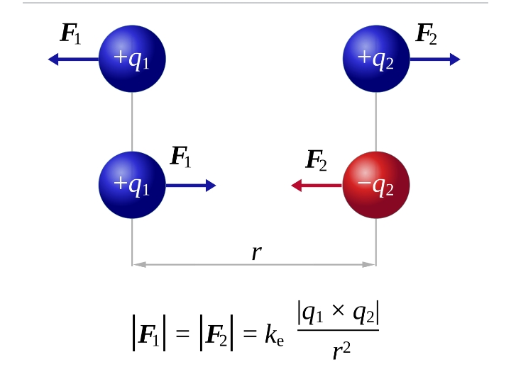
6.2 Vector form of Coulomb’s law
Let two point charges q₁ and q₂ be located at position vectors r₁ and r₂. Let r₂₁ = r₂ − r₁ represent the vector from charge 1 to charge 2, and r̂₂₁ = r₂₁ / |r₂₁| be the unit vector along this direction. The force on q₂ due to q₁ is
By Newton’s third law, the force on q₁ due to q₂, F₁₂ = −F₂₁. This shows Coulomb’s law agrees with Newton’s third law.
If q₁q₂ > 0 (like charges), the force is repulsive (along r̂₂₁, away from q₁); if q₁q₂ < 0 (unlike charges), the force is attractive (opposite to r̂₂₁).
6.3 Coulomb’s law in a medium
When charges are placed in a material medium of dielectric constant (relative permittivity) εᵣ, the force between them is reduced:
where ε = ε₀εᵣ is the permittivity of the medium.
6.4 Comparison: Coulomb force vs gravitational force
Both forces are central and obey an inverse-square law, but:
- Gravitational force is always attractive; Coulomb force can be attractive or repulsive.
- Gravitational force is independent of the medium; Coulomb force depends on the medium between the charges.
- Coulomb force is enormously stronger than gravitational force for elementary particles: e.g., for an electron and proton in a hydrogen atom, Felectric/Fgravitational ≈ 2.4 × 10³⁹.
7 Forces between Multiple Charges: Superposition Principle
The principle of superposition states that in a system of charges q₁, q₂, …, qₙ, the total force on any one charge (say q₁) is the vector sum of the forces exerted on it individually by each of the other charges, as if each such force existed independent of all other charges.
7.1 Derivation — total force on a charge due to a system of charges
Consider n point charges q₁, q₂, …, qₙ. The force on q₁ due to q₂, taking into account only the two-charge interaction, is F₁₂, given by Coulomb’s law. Likewise, the force on q₁ due to q₃ is F₁₃, and so on.
The principle of superposition says the force on charge q₁ due to the remaining (n − 1) charges is simply the vector sum of F₁₂, F₁₃, …, F₁ₙ:
The vector sum is obtained, as usual, by the parallelogram law of addition of vectors.
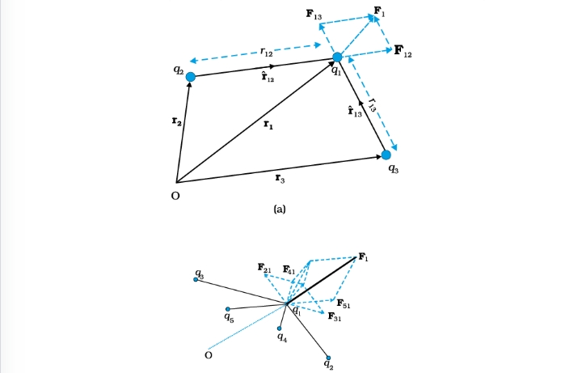
8 Electric Field
8.1 Concept and definition
The electric field at a point due to a source charge (or charge configuration) is the region of space around the charge in which its effect can be experienced. The electric field intensity E at a point is defined as the force experienced per unit positive test charge, placed at that point, without disturbing the position of the source charge.
The test charge q is taken to be vanishingly small so that it does not modify the original distribution of the source charge. Electric field is a vector quantity; its SI unit is newton per coulomb (N/C) or equivalently volt per metre (V/m).
8.2 Electric field due to a point charge
Consider a point charge Q placed at origin O. Let P be a point at distance r from Q. Place a small test charge q at P. By Coulomb’s law, the force on q is
By definition, the electric field at P is
This expression is independent of the test charge q; it depends only on the source charge Q and the position of the field point. For Q > 0, E points radially outward from Q; for Q < 0, E points radially inward (towards Q).
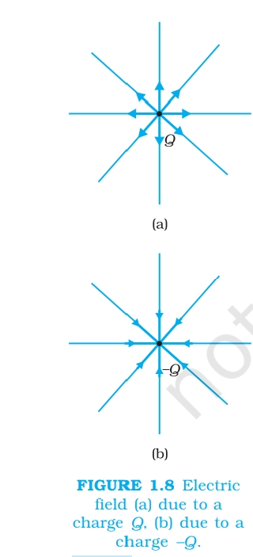
8.3 Electric field due to a system of charges
For a system of point charges q₁, q₂, …, qₙ with position vectors r₁, r₂, …, rₙ, the field at a point P (position r) is, by the superposition principle, the vector sum of the fields due to each charge:
where riP is the distance between charge qᵢ and point P, and r̂iP is the unit vector from qᵢ to P. E is a vector function of r; it varies from point to point in space and is different at different points.
8.4 Physical significance of electric field
Although the field is operationally defined in terms of a test charge, it is regarded as having its own independent existence. The field represents the physical situation due to the source charge, in the entire space around it, whether or not another charge is actually present to “feel” it. This concept becomes especially important when charges are in motion — because changes in the field propagate with the speed of light, not instantaneously, so the concept of the field is more useful than the concept of direct action-at-a-distance force between two charges.
8.5 Electric field due to a system of two charges (illustration)
For a system of two charges q₁ and q₂, the field due to q₁ alone at a point is E₁, and that due to q₂ alone is E₂, calculated as if the other charge were absent. The total field when both are present simultaneously is E = E₁ + E₂, in accordance with the superposition principle. Each charge produces its field independently of the presence of other charges; the total field is the vector sum of individual fields.
9 Electric Field Lines
An electric field line is a curve drawn in such a way that the tangent to it at each point is in the direction of the net field at that point.
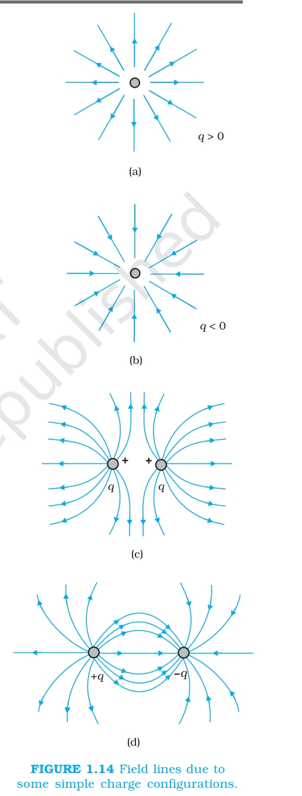
9.1 Properties of field lines
- Field lines start from a positive charge and end on a negative charge; if only one charge is present, they start or end at infinity.
- In a charge-free region, electric field lines are continuous curves without any breaks.
- Two field lines can never cross each other — if they did, the field at the point of intersection would have two directions, which is not possible.
- Electrostatic field lines do not form closed loops — this follows from the conservative nature of the electric field.
- The relative closeness of field lines indicates the relative strength of the field: field lines crowd where the field is strong, and are spaced apart where the field is weak. Where field lines are equally spaced and parallel straight lines, the field is uniform.
- The number of field lines emanating radially from a point (positive) charge or terminating on a point (negative) charge is proportional to the magnitude of the charge.
- Field lines are perpendicular to the surface of a conductor at every point.
- Electric field lines have a tendency to contract lengthwise, like a stretched elastic string under tension — this is why unlike charges (joined by field lines) attract each other.
- Neighbouring field lines that are parallel tend to repel each other sideways, like the mutual repulsion between adjacent parallel current-carrying wires in the same direction — this is why like charges (whose field lines bend away from each other) repel.
10 Electric Flux
Electric flux through a given area is defined as the total number of field lines crossing the area (normally). It is a measure of the flow of electric field through a surface.
10.1 Area vector
A small area element can be regarded as a vector ΔS, having magnitude equal to the area ΔS and direction along the outward normal to that area.
10.2 Definition and formula
For a small planar area element ΔS in a uniform field E, the electric flux through it is
where θ is the angle between E and the outward normal n̂ to the area element.
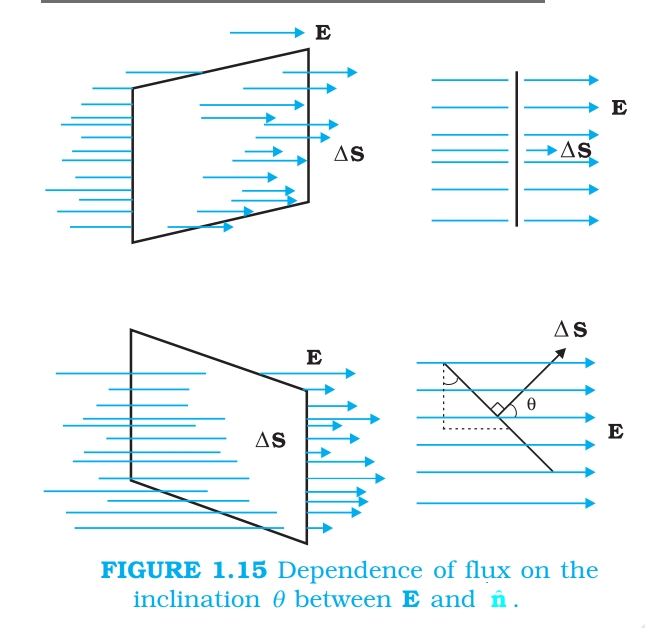
Flux is maximum (= EΔS) when the field is normal to the surface (θ = 0), and zero when the field is parallel to the surface (θ = 90°).
For a surface of finite size, the flux is obtained by summing over all the small area elements that constitute the surface:
Electric flux is a scalar quantity; its SI unit is N m² C⁻¹ (also equivalent to volt-metre).
11 Electric Dipole
An electric dipole is a pair of equal and opposite point charges q and −q, separated by a small distance 2a.
11.1 Dipole moment
where the direction of p is from the negative charge to the positive charge, and 2a is the vector from the negative to the positive charge. Its SI unit is coulomb-metre (C m).
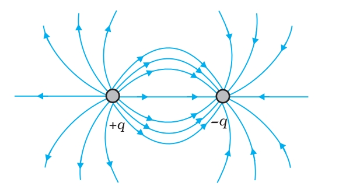
11.2 Electric field of a dipole at a point on the axial line — Derivation
Consider a dipole with charges −q at point A and +q at point B, separated by 2a, with dipole moment p directed from A to B. Let P be a point on the axial line at distance r from the centre O of the dipole, on the side of +q.
Distance of P from +q (at B): r − a. Distance of P from −q (at A): r + a.
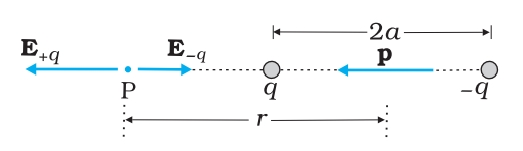
Field at P due to +q, directed along the axis away from the dipole (from B towards P):
Field at P due to −q, directed along the axis towards the dipole (from P towards A):
Since E₊q and E₋q are oppositely directed and E₊q > E₋q (as P is closer to +q), the resultant field is along the direction of E₊q, with magnitude
For a short dipole, when r ≫ a, (r² − a²)² ≈ r⁴, giving the important result:
11.3 Electric field of a dipole on the equatorial line — Derivation
Let A(−q) and B(+q) lie on the dipole axis, separated by 2a, and let P be a point on the equatorial line (perpendicular bisector of the dipole axis, through O) at distance r from O. By symmetry, the distance of P from each charge is equal: AP = BP = √(r² + a²).
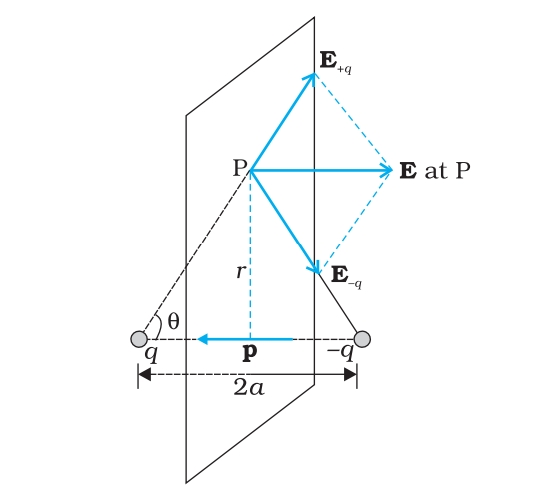
Magnitude of field due to +q and due to −q are equal:
The components of E₊q and E₋q normal to the dipole axis cancel out by symmetry (they are equal and opposite); the components along the axis (antiparallel to p) add up. Each component along the axis direction is E₊q cos θ, where cos θ = a / √(r² + a²).
Total field (directed opposite to p):
For a short dipole (r ≫ a):
11.4 Physical significance of dipoles
In most molecules, the centres of positive and negative charges coincide, giving zero dipole moment. However, molecules like water (H₂O) may have a permanent dipole moment even in the absence of an external field, because their charge distribution is asymmetric; such molecules are called polar molecules. When an external field is applied, positive and negative charge centres in a molecule get displaced in opposite directions, and the molecule develops a dipole moment — this is called polarization, and such a molecule is said to be polarized by the external field.
12 Dipole in a Uniform External Electric Field
When an electric dipole is placed in a uniform external field E, the net force on it is zero (since the charges +q and −q experience equal and opposite forces qE and −qE), but a net torque acts on it if the dipole axis is not aligned with the field, tending to align it with the field.
12.1 Derivation of torque on a dipole
Consider a dipole with charges q at B and −q at A, separation 2a, dipole moment p = q(2a), placed in a uniform external field E, making an angle θ with p.
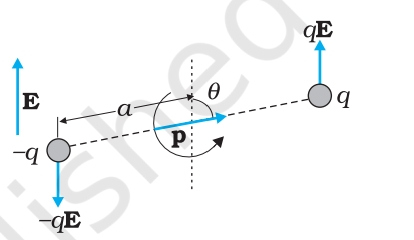
Force on +q at B = qE (along E). Force on −q at A = −qE (opposite to E). Net force = qE + (−qE) = 0.
Since the two equal and opposite forces act at different points (separated by 2a sin θ, the perpendicular distance between their lines of action), they form a couple, producing a torque. Magnitude of torque = force × perpendicular distance between the two forces:
In vector form:
The direction of τ is perpendicular to both p and E, given by the right-hand rule, and it tends to rotate the dipole so as to align p along E.
Special cases:
- If p is parallel to E (θ = 0), torque is zero — stable equilibrium.
- If p is antiparallel to E (θ = 180°), torque is zero, but this is unstable equilibrium.
- If p is perpendicular to E (θ = 90°), torque is maximum, τmax = pE.
Non-uniform field: If the external field is non-uniform, the net force on the dipole is not zero, in addition to a torque; the dipole then also undergoes translational motion.
13 Continuous Charge Distribution
When charge is distributed continuously over a body (rather than at discrete points), it is convenient to consider the charge as spread continuously, described in terms of charge densities.
13.1 Types of charge density
- Linear charge density λ: charge per unit length, for charge distributed along a line (e.g. a wire): λ = ΔQ/Δl; SI unit C/m.
- Surface charge density σ: charge per unit area, for charge distributed over a surface: σ = ΔQ/ΔS; SI unit C/m².
- Volume charge density ρ: charge per unit volume, for charge distributed throughout a volume: ρ = ΔQ/ΔV; SI unit C/m³.
To calculate the field of a continuous charge distribution, the distribution is divided into small volume elements, each with charge Δq. Using Coulomb’s law, the field due to each element is calculated, and all these fields are summed (integrated) using the superposition principle to get the total field.
14 Gauss’s Law
14.1 Statement
Gauss’s law states that the total electric flux through any closed surface (a surface enclosing a volume) is 1/ε₀ times the total charge q enclosed by that surface.
The closed surface used is commonly called a Gaussian surface, which can be of any shape/size, chosen conveniently based on the symmetry of the charge distribution.
14.2 Derivation — flux through a sphere enclosing a point charge
Consider a point charge q placed at the centre of a sphere of radius r (a Gaussian surface). By symmetry, the electric field E at every point on this spherical surface has the same magnitude and is directed radially outward, i.e. parallel to the area vector dS at every point.
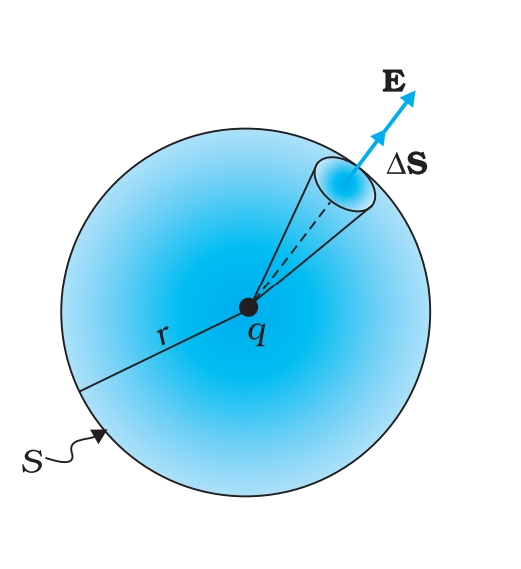
Field at every point on the sphere:
Flux through the sphere:
(since E and dS are parallel everywhere, and ∮ dS = total surface area of sphere = 4πr²)
This verifies Gauss’s law for this special case; the law itself is more general and can be shown to hold for any closed surface, and for any distribution and number of charges enclosed. It can be proved that:
- The flux depends only on the charge enclosed within the surface, not on its exact position inside, and not at all on charges outside the surface.
- The result is true for any closed surface, no matter what its shape or size.
- Charges outside the surface contribute zero net flux, since field lines from an outside charge that enter the surface at one point must leave it at another.
- qenc is the algebraic sum of all charges enclosed by the surface (positive and negative charges taken with sign); charges outside do not contribute to qenc, though the field E at any point on the Gaussian surface is due to all charges, both inside and outside.
14.3 Importance of Gauss’s Law
Gauss’s law is an alternative, but completely equivalent, formulation of Coulomb’s law. However, when the charge distribution has enough symmetry (spherical, cylindrical, or planar symmetry), Gauss’s law allows the electric field to be calculated with far less mathematical effort than by direct application of Coulomb’s law.
15 Applications of Gauss’s Law
15.1 Field due to an infinitely long straight uniformly charged wire — Derivation
Let the wire have linear charge density λ (uniform, positive). By symmetry, the field must point radially outward (perpendicular to the wire) and its magnitude can depend only on the perpendicular distance r from the wire.
Gaussian surface: A right circular cylinder of radius r and length l, coaxial with the wire, closed at both ends.
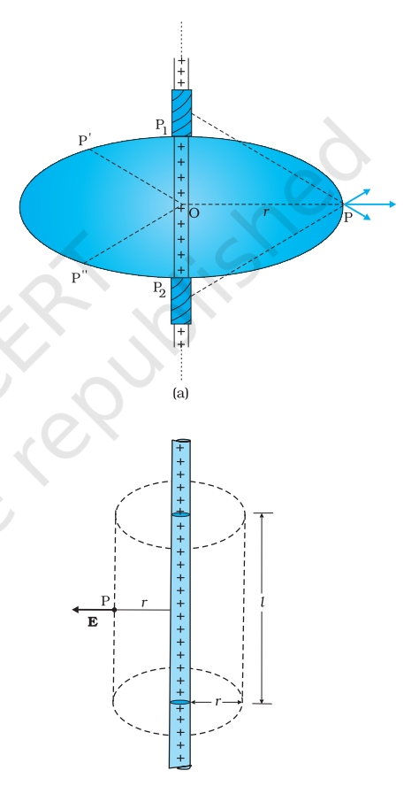
The cylindrical (curved) surface has field E everywhere normal to it and of constant magnitude E; the flux through it is E × 2πrl. The two flat (end) circular caps have E parallel to their surface (i.e. perpendicular to their area vector, since E is radial and the end-cap normals are along the wire), so flux through them is zero.
Total flux:
Charge enclosed by the Gaussian surface: qenc = λl. By Gauss’s law, ϕ = qenc/ε₀:
In vector form, E = [λ / (2πε₀r)] n̂, where n̂ is the radial unit vector in the plane normal to the wire passing through the point. The field is independent of the length of the wire, and falls off as 1/r (not 1/r² as for a point charge).
15.2 Field due to a uniformly charged infinite plane sheet — Derivation
Let the sheet have uniform surface charge density σ (positive). By symmetry, the field must be perpendicular to the sheet, pointing outward (away) on either side, with magnitude depending only on the perpendicular distance from the sheet, and being the same on either side (for points equidistant from the sheet).
Gaussian surface: A rectangular (pill-box shaped) Gaussian surface — a cylinder with its axis perpendicular to the sheet, having two flat faces of area A, one on each side of the sheet, equidistant from it, and a curved (lateral) surface.
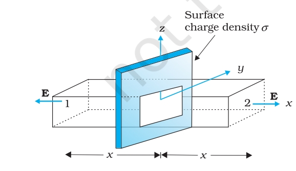
The flux through the curved surface is zero, since E is parallel to it (perpendicular to its area vector) everywhere. The flux through each flat face is E × A (since E is normal to the flat faces there). Total flux through the two faces:
Charge enclosed by the Gaussian surface qenc = σA. By Gauss’s law:
The field is directed away from the sheet if σ is positive (and towards the sheet if σ is negative).
15.3 Field due to a uniformly charged thin spherical shell — Derivation
Let the shell have radius R and uniform surface charge density σ, total charge q = σ × 4πR². By symmetry, the field at any point (whether inside or outside) is radial, and its magnitude depends only on the distance r from the centre.
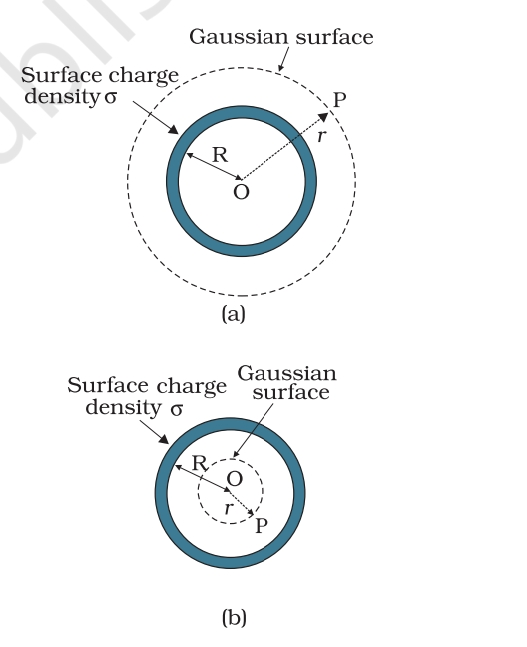
(a) Field outside the shell (r > R)
Choose a spherical Gaussian surface of radius r (r > R), concentric with the shell. By symmetry, E is radial and of the same magnitude E at every point of this Gaussian surface, and is everywhere parallel to dS.
The entire charge q of the shell is enclosed. By Gauss’s law:
Thus, for points outside the shell, the field is exactly as if the entire charge q were concentrated at the centre — the same as the field of a point charge q.
(b) Field on the surface of the shell (r = R)
Putting r = R in the above:
(c) Field inside the shell (r < R)
Choose a spherical Gaussian surface of radius r (r < R), concentric with the shell. By the same symmetry argument, flux through this surface is E × 4πr². Since all the charge of the shell resides on the surface at radius R, no charge is enclosed by a Gaussian surface of radius r < R: qenc = 0. By Gauss’s law:
Graph of E vs r
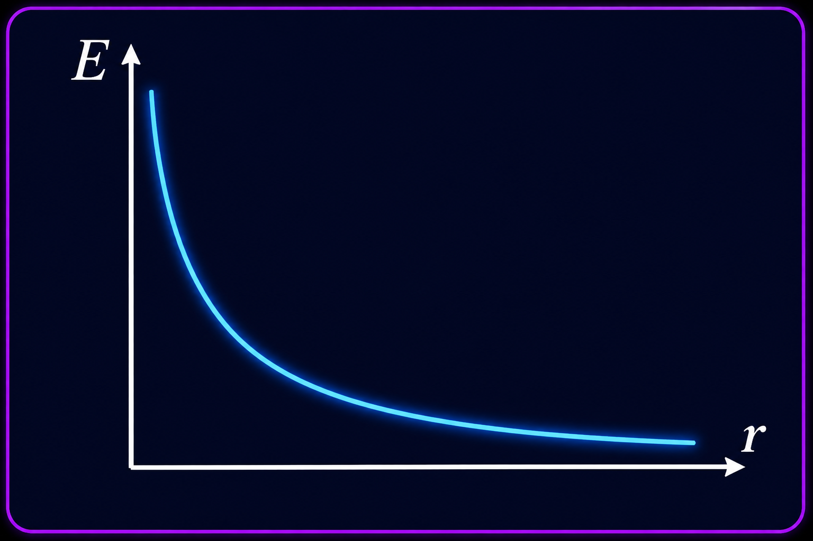
E = 0 for r < R, jumps discontinuously to σ/ε₀ at r = R, and falls off as 1/r² for r > R (exactly like a point charge q at the centre).
15.4 Field due to two thin infinite parallel charged plane sheets
Consider two large, thin, parallel plane sheets with uniform surface charge densities σ₁ and σ₂, separated by some distance. Each sheet on its own produces a uniform field of magnitude σ/2ε₀ on either side, directed away from itself if positively charged (and towards itself if negatively charged). By the superposition principle, the resultant field in any region is the vector sum of the fields due to the two sheets individually.
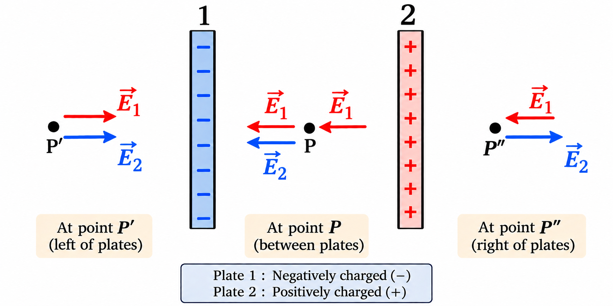
General method: In each region, add the field σ₁/2ε₀ due to sheet 1 and σ₂/2ε₀ due to sheet 2, taking direction (sign) into account, treating a field pointing right (towards region III) as positive.
Case (a) — equal and opposite charges (σ₁ = +σ, σ₂ = −σ), as in a parallel-plate capacitor:
- Region I and Region III (outside): the outward field of +σ and the inward field of −σ are equal and opposite ⇒ E = 0.
- Region II (between the sheets): both fields point in the same direction (from the + sheet towards the − sheet) and add up:
Case (b) — equal and like charges (σ₁ = σ₂ = +σ):
- Region II (between): the two outward fields point in opposite directions and cancel ⇒ E = 0.
- Region I and Region III (outside): the two fields point in the same direction (away from the pair) and add up:
This result (zero field outside, uniform field σ/ε₀ between the plates, for equal-and-opposite charges) is the basis of the parallel-plate capacitor, studied in the next chapter.
16 Summary of Key Formulas
- Coulomb’s law: F = (1/4πε₀)(q₁q₂/r²) r̂
- Electric field (point charge): E = (1/4πε₀)(Q/r²) r̂
- Electric flux: ϕ = E·S = ES cos θ
- Dipole moment: p = q × 2a
- Dipole field (axial): E = (1/4πε₀)(2p/r³)
- Dipole field (equatorial): E = (1/4πε₀)(p/r³)
- Torque on dipole: τ = p × E
- Gauss’s law: ∮ E·dS = qenc/ε₀
- Infinite line charge: E = λ/(2πε₀r)
- Infinite plane sheet: E = σ/2ε₀
- Spherical shell (outside): E = (1/4πε₀)(q/r²); (inside): E = 0; (surface): E = σ/ε₀
- Two parallel sheets, opposite charge (capacitor): Ebetween = σ/ε₀, Eoutside = 0
- Two parallel sheets, like charge: Eoutside = σ/ε₀, Ebetween = 0